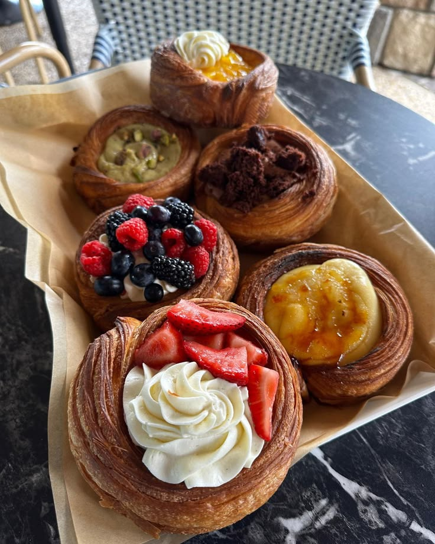

Jenis-jenis Bakery
Bakery hadir dalam berbagai jenis, di antaranya:
Bakery adalah usaha yang berfokus pada pembuatan dan penjualan produk roti, kue, dan pastry. Dalam perkembangannya, bakery tidak hanya menawarkan produk jadi, tetapi juga menjadi tempat nongkrong, bahkan bagian dari gaya hidup masyarakat modern.
Bakery hadir dalam berbagai jenis, di antaranya:
